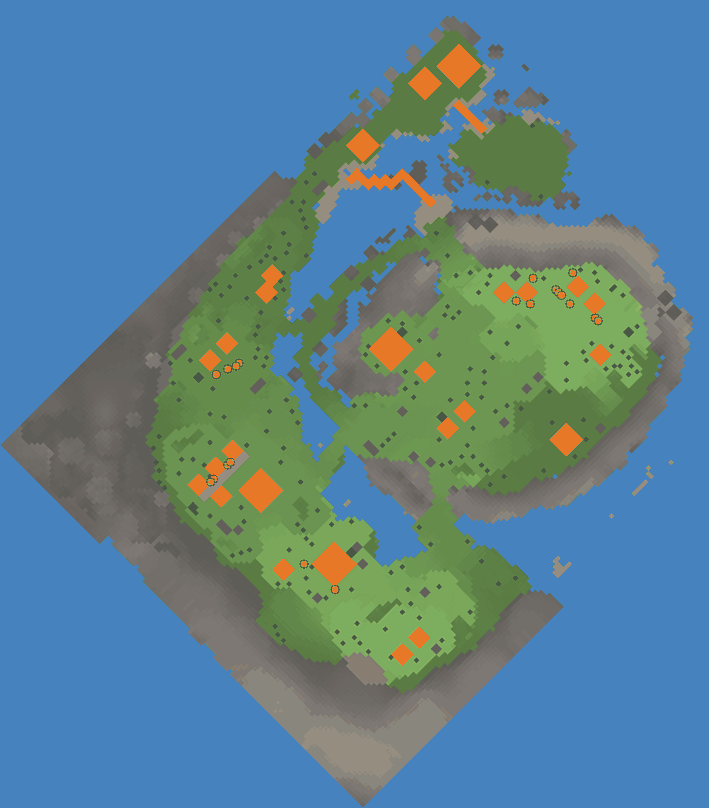

Game data v31 · build 255Sources & research notes
Challenges › Chill · batch 10, 13 of 27 · released 18 Dec 2024 · an older challenge, still playable from the archive but no longer in the rotation
As the first snowfall signals the drop in temperature, holiday cheer settles over the small town of Frostbrook, where everybody is getting ready to stay inside cozy and warm, surrounded by friends and family.
Map

- 1Windmill, Bakery, Bridge ×5
- 2Trading Outpost, Bridge ×12
- 3Bridge ×3
- 4Brick House, Trappers' Hut
- 5Brick House ×2 (3 places)
- 6Winter Cabin, Warehouse
- 7Open Kitchen, Market
- 8Trappers' Hut (2 places)
- 9Roadworks Office, Brick House
- 10Gingerbread Man Shop
- 11Brick House ×3, Market
- 12Bonfire
- 13Open Kitchen
- Water
- Sand
- Soil
- Mountain
- Trees
- Rocks
- Roads
- Buildings
- Villagers
Our own drawing from the level file: one patch of colour per map square, seen flat from above and turned to face the same way as the game’s camera at the start (the game also tilts the view, and turning the camera rotates it). Lighter ground is higher. Decorations are left out. Numbers mark the buildings already placed.
Starting conditions
- Villagers
- 16 adults, 4 kids
- Workplaces
- Windmill, Bakery, Trappers' Hut ×3, Gingerbread Man Shop, Market ×2, Open Kitchen ×2, Bonfire, Warehouse, Trading Outpost
- Homes
- Brick House ×11, Winter Cabin
- Roads & decoration
- Road ×8, Roadworks Office, Bridge ×20
- Stockpile
- FoundryTray ×6, Plate ×48, Stick ×200, Animal Hide ×10, Clay ×20, Wheat ×12, Meat ×15, Stew ×10, Log ×10 plus 131 loose piles whose contents are set when the map loads
- Tools
- Wheelbarrow ×4, Hoe · Wood ×4
- Wild trees
- Winter Pine Tree ×194
- Map resources
- Rock sources ×24 (for a Quarry)
- Salvage
- Christmas Gift 3 Books and Coats ×5 (1 Coat + 2 Book each), Christmas Gift 0 Coats ×3 (3 Coat each), Christmas Gift 1 Books and Coats ×6 (1 Coat + 2 Book each), Christmas Gift 2 Coats ×5 (3 Coat each), Christmas Gift 5 Books and Coats ×3 (1 Coat + 2 Book each), Christmas Gift 4 Coats ×4 (3 Coat each), Expedition Crate ×6 (3 Plank each), Pallet ×5 (1 Plank each). Dismantling them all gives 50 Coat, 28 Book, 23 Plank
Counted from the map file, leaving out 95 scenery objects (signs, birds, statues, story props). Stockpile numbers are items placed on the map and can differ slightly from what the stockpile shows. Wild tree counts are what the map starts with; trees spread and get felled from there.
Main objectives
| Objective | What counts |
|---|---|
| Have 6 Tailors. | Have this many standing at once. |
| Sew 100 Coats. | A running total: everything made during the level counts, even if it is used up or lost when its building is recycled. |
| Have 3 Bonfires. | Have this many standing at once. |
Optional objectives
| Objective | What counts |
|---|---|
| Have no Brick Houses. | None may be standing. |
| Have everyone settled. | Every villager has a home. |
Objectives are worded as the game shows them: the level’s own objective text where it has one, otherwise the game’s standard objective lines.
What the objectives need
Items the objectives ask for, plus the ingredients to make them, worked back through each recipe using the buildings this map offers. Amounts are rounded up to whole items; allow extra for anything villagers use along the way. Items that can be picked up or harvested from the map stop there rather than being worked back through a factory.
| Resource | Main objectives | Main + optional | Of which asked for directly | Made at |
|---|---|---|---|---|
| 100 | 100 | 100 | Tailor | |
| Animal Hide | 300 | 300 | — | Trappers' Hut |
How the totals were worked out
- 100 Coat at the Tailor needs 300 Animal Hide
- 300 Animal Hide at the Trappers' Hut needs
Construction materials for the buildings themselves are not included yet. Recipe ratios come from each resource's stored recipe; see the resource pages for their evidence.
Strategy
No strategy yet. Finished it? Share yours.
Villager needs
| Need | Active on this map | What can meet it here |
|---|---|---|
| Food | Yes | Bread, Gingerbread Man, Stew, Veggie |
| Housing | Yes | — |
| Community | Yes | Beer, Communal Plaza, Open Kitchen |
| Fun | Yes | Beer, Gingerbread Man, Playground |
| Heat | Yes | Coat (carried), Bonfire, Winter Cabin |
| Wellness | Yes | Zen Garden |
| Cooling | No | — |
| Hydration / thirst | No | — |
Available buildings & plants
29 buildings and plants can be built on this map from the start. Anything unlocked during play is not included.
Buildings, structures & decorations
Fields & plants
Starting objects & resources
Show 50 starting object types
| Object | Count |
|---|---|
| Winter Pine | 194 |
| Rock Source | 24 |
| Christmas Gift 3 Books and Coats | 5 |
| Christmas Gift 0 Coats | 3 |
| Christmas Gift 1 Books and Coats | 6 |
| Christmas Gift 2 Coats | 5 |
| Christmas Gift 5 Books and Coats | 3 |
| Christmas Gift 4 Coats | 4 |
| Expedition Crate 1 | 6 |
| Pallet | 5 |
| Bridge | 20 |
| Road | 8 |
| Brick House | 11 |
| Winter Cabin | 1 |
| Windmill | 1 |
| Bakery | 1 |
| Trappers' Hut | 3 |
| Gingerbread Man Shop | 1 |
| Roadworks Office | 1 |
| Market | 2 |
| BakeryPeel | 1 |
| Basket | 6 |
| Wheelbarrow | 3 |
| HunterTrap | 24 |
| Plate | 48 |
| Hoe - Wood | 4 |
| Stick | 200 |
| Animal Hide | 10 |
| Clay | 20 |
| Wheat | 12 |
| Sea Ice | 30 |
| Christmas Cane | 17 |
| Christmas Snowman 0 | 8 |
| Tool Wheelbarrow | 1 |
| 1-1 Sign#1 | 1 |
| Light Lantern | 1 |
| Christmas Snowman 1 | 5 |
| Christmas Sled | 2 |
| Christmas Tree Lights | 6 |
| Open Kitchen | 2 |
| Bonfire | 1 |
| Fireflies Event | 3 |
| Winter Villager Adult | 16 |
| Winter Villager Kid | 4 |
| Warehouse | 1 |
| Trading Outpost | 1 |
| StandalonePile | 131 |
| Meat | 15 |
| Stew | 10 |
| Log | 10 |